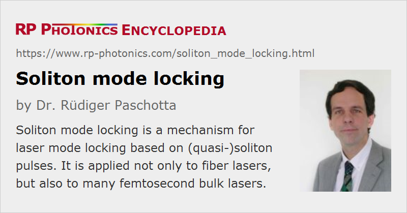

Soliton Mode Locking
Definition: a mechanism for laser mode locking based on soliton pulses
More general term: mode locking
German: Soliton-Modenkoppeln
Categories: lasers, light pulses, methods
How to cite the article; suggest additional literature
Author: Dr. Rüdiger Paschotta
For the generation of femtosecond pulses, soliton mode locking is a frequently used technique. It has originally been developed for fiber lasers, where however it is quite limited in terms of pulse energy and duration, and later applied to mode-locked bulk (with quasi-soliton pulses).
Soliton Mode Locking of Fiber Lasers
For true soliton mode locking, one has soliton pulse propagation in the used fibers, where the effects of chromatic dispersion and nonlinearity act together such that overall there is no temporal broadening of the pulses nor any change of their optical spectrum [2]. That balance of effects requires fibers with anomalous chromatic dispersion, which is easily possible e.g. in the 1.5-μm regime and – despite the normal dispersion of silica fibers – also in the 1-μm regime when using photonic crystal fibers with a suitable design. A saturable absorber is only required for starting and stabilizing the mode locking, while the pulse shaping is essentially done by dispersive and nonlinear effects. The obtained pulses can have a nice temporal profile with sech2 shape and hardly any chirp, i.e., with a high pulse quality.
Unfortunately, the performance of soliton mode-locked fiber lasers is very limited. For picosecond pulse durations, the soliton energies of typical single-mode fibers are very small (in the picojoule regime), and thus also the possible output pulse energies. (It is also problematic to operate a laser with an intracavity average power far below the gain saturation power, i.e., only slightly above the laser threshold.) For shorter pulse durations in the femtosecond regime, one could in principle obtain significantly higher pulse energies, but then the soliton period becomes much shorter; once it is too short (particularly for a long laser resonator), the circulating pulse becomes unstable due to too high nonlinear phase shifts per round-trip. Before the pulses get really unstable, one may observe substantial Kelly sidebands in the optical spectrum, i.e., a degradation of pulse quality.
A kind of quasi-soliton mode locking can be realized with an additional strongly dispersive element within the laser resonator, such that the soliton balance is determined by the over all dispersion and nonlinearity per resonator round trip. One may then obtain higher pulse energies, but combined with longer pulse durations.
More sophisticated mode locking techniques for much better performance have been developed for fiber lasers. Typically, they rely on substantially more complicated pulse shaping processes, and often they result in non-ideal pulse quality. See the article on mode-locked fiber lasers for more details.
Quasi-Soliton Mode Locking of Bulk Lasers
While the concept of soliton mode locking has serious limitations for fiber lasers (see above), it has become very important for solid-state bulk lasers. Here, the total intracavity chromatic dispersion is made anomalous e.g. by inserting a prism pair into the laser resonator. A suitable balance of dispersion and Kerr nonlinearity, quasi-soliton pulses can be obtained; one should first care about an appropriate amount of nonlinearity (see below) and then introduce the required amount of anomalous dispersion for dispersion compensation. Because the dispersion and nonlinearity are not smoothly distributed in the resonator, but lumped at certain places (e.g., the laser crystal and dispersive mirrors or a prism pair), one does not obtain true soliton pulses, but quasi-soliton pulses, where the balance of dispersion and nonlinearity holds only for the overall nonlinear and dispersive phase shifts per resonator round trip. Such a balance works if those phase shift per round trip are not too strong. Again, a saturable absorber is required for starting and stabilizing the mode locking, but the pulse duration may be much shorter than the response time of the absorber.
The quasi-soliton condition implies certain scaling laws for soliton mode-locked lasers. For example, quadrupling the chromatic dispersion in the laser resonator allows the pulse energy to be doubled, while the pulse duration is also doubled, so that the peak power and thus also the nonlinear phase shift per round trip remains unchanged.
Compared with the regime of mode locking with near-zero chromatic dispersion in the laser resonator, soliton mode locking allows for significantly stronger nonlinear phase shifts due to the Kerr nonlinearity, which would otherwise make the pulses unstable. The optimum nonlinear phase shift per resonator round trip is normally between some tens and a few hundred milliradians:
- Too low values of the nonlinear phase shift lead to rather weak soliton pulse shaping and consequently a stronger sensitivity to other influences, such as pulse shaping details of the saturable absorber, the limited gain bandwidth etc. This can happen for mode-locked solid-state bulk lasers operating with relatively long pulses; in that regime, one also often requires inconveniently large amounts of anomalous intracavity dispersion.
- On the other hand, too strong nonlinear phase shifts can make the pulses unstable due to the periodic disturbance of the circulating pulse on a length scale which is not much shorter than the soliton period.
In some cases, the intracavity chromatic dispersion can be varied e.g. by modifying the insertion of prisms of a prism pair. One may then observe a regime where the pulse duration (for fixed pump power and pulse energy) varies in proportion to the overall amount of anomalous dispersion. However, when the pulse duration gets too short, the pulses suddenly become unstable. The minimum possible pulse duration can be set by the limited gain bandwidth or too high nonlinear phase shifts. As an example, Figure 1 shows how the pulse duration varies with the amount of chromatic dispersion in such a laser as numerically modeled with pulse propagation software. The dependence is nearly linear for sufficiently strong chromatic dispersion, but the pulses become unstable if the dispersion becomes too weak.
Figure 2 shows the evolution of the optical spectrum within thousands of round trips in the unstable regime (GDD = −400 fs2):
For mode-locked bulk lasers, soliton mode locking usually works best for pulse durations below 1 ps. For pulse durations well above 1 ps, impractically large amounts of anomalous dispersion and also possibly elements for an enhanced total nonlinearity would be required. Only for pulse durations below 10 fs, nonlinear phase shifts usually become so strong (despite the use of a rather short laser crystal) that the stability of the circulating solitons requires a very strong saturable absorber.
When used in the appropriate regime of nonlinear phase shifts, soliton mode locking of bulk lasers normally allows for good performance combined with high stability and very high pulse quality, i.e. for well-shaped close to bandwidth-limited ultrashort pulses with low chirp. Due to the relatively simple pulse shaping mechanism, such lasers can often be designed mostly based on simple analytical equations, not necessarily requiring numerical pulse propagation studies – except perhaps if additional details such as the detailed dependence of stability on design details needs to be studied for obtaining cutting-edge performance.
Questions and Comments from Users
Here you can submit questions and comments. As far as they get accepted by the author, they will appear above this paragraph together with the author’s answer. The author will decide on acceptance based on certain criteria. Essentially, the issue must be of sufficiently broad interest.
Please do not enter personal data here; we would otherwise delete it soon. (See also our privacy declaration.) If you wish to receive personal feedback or consultancy from the author, please contact him e.g. via e-mail.
By submitting the information, you give your consent to the potential publication of your inputs on our website according to our rules. (If you later retract your consent, we will delete those inputs.) As your inputs are first reviewed by the author, they may be published with some delay.
Bibliography
| [1] | L. F. Mollenauer and R. H. Stolen, “Soliton laser”, Opt. Lett. 9 (1), 13 (1984), doi:10.1364/OL.9.000013 |
| [2] | F. M. Mitschke and L. F. Mollenauer, “Ultrashort pulses from the soliton laser”, Opt. Lett. 12 (6), 407 (1987), doi:10.1364/OL.12.000407 |
| [3] | J. D. Kafka et al., “Mode-locked erbium-doped fiber laser with soliton pulse shaping”, Opt. Lett. 14 (22), 1269 (1989), doi:10.1364/OL.14.001269 |
| [4] | I. N. Duling III, “All-fiber ring soliton laser mode locked with a nonlinear mirror”, Opt. Lett. 16 (8), 539 (1991), doi:10.1364/OL.16.000539 |
| [5] | T. Brabec et al., “Mode locking in solitary lasers”, Opt. Lett. 16 (24), 1961 (1991), doi:10.1364/OL.16.001961 |
| [6] | K. Tamura et al., “Soliton versus nonsoliton operation of fiber ring lasers”, Appl. Phys. Lett. 64, 149 (1994), doi:10.1063/1.111547 |
| [7] | F. X. Kärtner et al., “Stabilization of solitonlike pulses with a slow saturable absorber”, Opt. Lett. 20 (1), 16 (1995), doi:10.1364/OL.20.000016 |
| [8] | F. X. Kärtner et al., “Solitary pulse stabilization and shortening in actively mode-locked lasers”, J. Opt. Soc. Am. B 12 (3), 486 (1995), doi:10.1364/JOSAB.12.000486 |
| [9] | M. E. Fermann et al., “High-power soliton fiber laser based on pulse width control with chirped fiber Bragg gratings”, Opt. Lett. 20 (2), 172 (1995), doi:10.1364/OL.20.000172 |
| [10] | F. X. Kärtner et al., “Soliton mode-locking with saturable absorbers”, J. Sel. Top. Quantum Electron. 2 (3), 540 (1996), doi:10.1109/2944.571754 |
| [11] | A. B. Grudinin and S. Gray, “Passive harmonic mode locking in soliton fiber lasers”, J. Opt. Soc. Am. B 14 (1), 144 (1997), doi:10.1364/JOSAB.14.000144 |
| [12] | M. Santagiustina, “Third-order dispersion radiation in solid-state solitary lasers”, J. Opt. Soc. Am. B 14 (6), 1484 (1997), doi:10.1364/JOSAB.14.001484 |
| [13] | R. Paschotta et al.,“Passive mode locking with slow saturable absorbers”, Appl. Phys. B 73 (7), 653 (2001), doi:10.1007/s003400100726 |
See also: solitons, soliton period, mode locking, dispersion compensation, Kelly sidebands, mode-locked fiber lasers
and other articles in the categories lasers, light pulses, methods
|  |
If you like this page, please share the link with your friends and colleagues, e.g. via social media:
These sharing buttons are implemented in a privacy-friendly way!